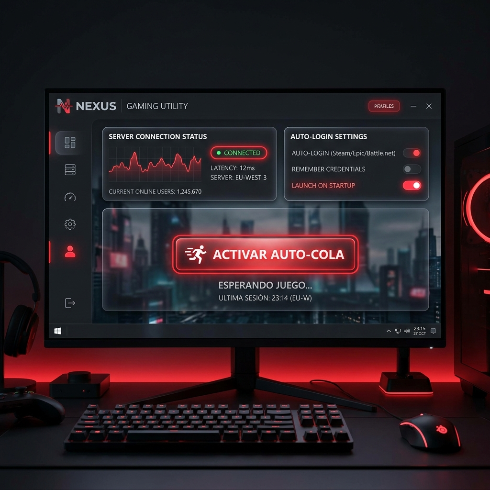
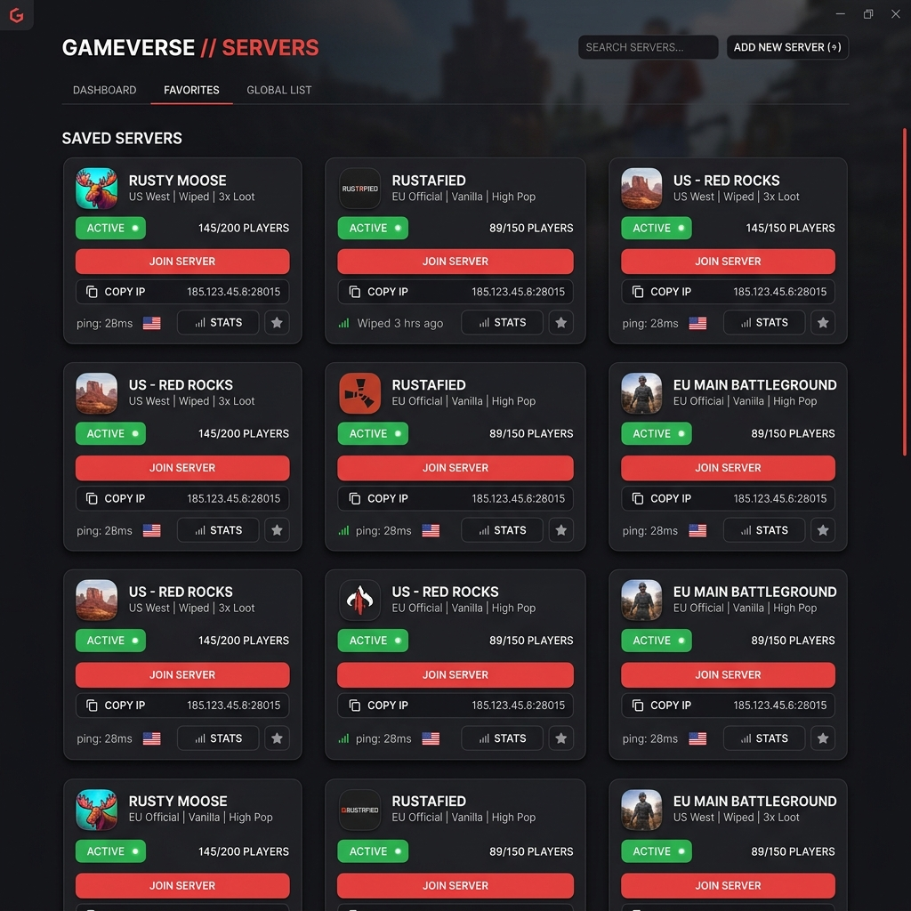
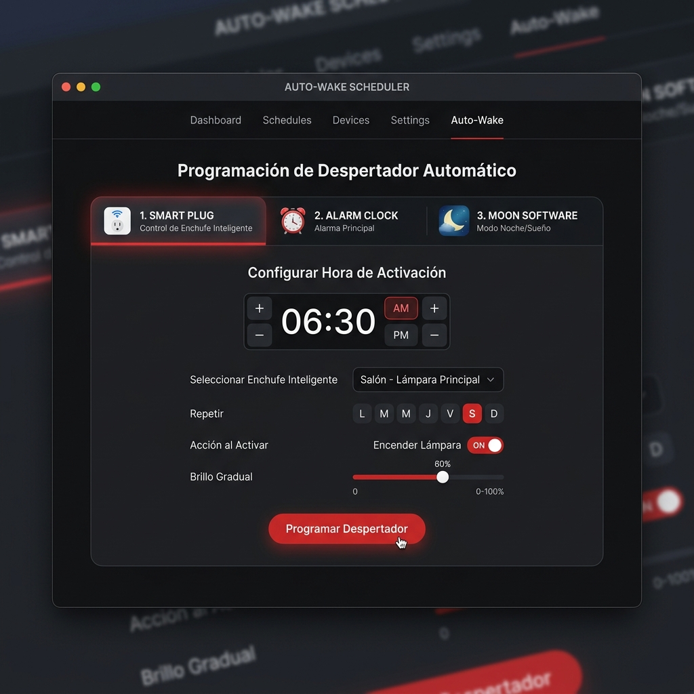

Evita las colas de Rust mientras duermes
Un lanzador de escritorio ligero y premium que automatiza el encendido de tu ordenador, el inicio de sesión seguro en Windows/Steam y la conexión desatendida a tu servidor preferido.

Cómo saltarse la cola en 3 pasos
La herramienta coordina el hardware de tu ordenador y la configuración del sistema para evitar que tengas que esperar frente a la pantalla.
Programa el encendido
Elige tu método favorito: enchufe inteligente (BIOS), temporizador del reloj del sistema (BIOS RTC) o el programador de tareas suspendidas.
Sesión Auto-Iniciada
Al encenderse, Windows inicia sesión automáticamente con tus credenciales y Steam se loguea en tu cuenta seleccionada omitiendo el selector de usuarios.
Conexión y Cola Lista
Tras un retraso configurable para que el sistema cargue y se conecte a Internet, Rust se abre y conecta directamente a la IP del servidor que guardaste.
Una Interfaz Moderna e Intuitiva
Echa un vistazo al diseño limpio de la aplicación y sus diferentes paneles de control.
Panel de Control Principal
Configura la IP de tu servidor, gestiona retrasos, selecciona tu cuenta activa de Steam y activa la auto-cola con un solo clic.

Gestor de Servidores Guardados
Organiza, renombra, copia o importa/exporta tus servidores favoritos en un formato JSON ordenado.

Múltiples Métodos de Auto-Despertar
Programa alarmas por hardware en BIOS o tareas automáticas por software para encender tu PC de forma desatendida.
Todo lo que necesitas en un único .exe
Olvídate de scripts complicados en Batch o PowerShell. Una interfaz moderna y completa para controlar todo el proceso.
Selector de Cuentas Steam
Detecta y te permite elegir qué cuenta de Steam usar. Modifica el registro de Windows y el archivo config de Steam para saltarse el popup de selección en el arranque.
AutoLogon de Windows
Configura de forma temporal las credenciales de Windows. Ideal para evitar que tu ordenador se quede bloqueado en la pantalla de ingreso con contraseña.
Modo Auto-Despertar Triple
Soporte nativo para enchufe inteligente (AC Power Loss), BIOS RTC Alarm y tareas programadas del sistema (WakeToRun) para PC en suspensión.
Lista de Servidores
Guarda tus servidores con alias personalizados. Además, puedes exportar o importar la lista completa en un archivo JSON para compartirla con tu clan.
Limpieza Inteligente de IP
Copia y pega directamente comandos de la consola F1. El software limpia automáticamente los prefijos 'connect' o 'client.connect' por ti.
Auto-Actualizador
No te preocupes por buscar nuevas versiones. La app comprueba en GitHub las actualizaciones y se auto-parchea reemplazando el archivo con un clic.
Preguntas Frecuentes
Resolvemos las preguntas más comunes sobre la seguridad de tus datos y el hardware compatible.
steam://run/252490//+connect IP:PUERTO) tal como lo hace tu navegador web. Es 100% seguro.
Olvídate de las colas de Rust
Descarga ahora el launcher en tu ordenador, introduce el servidor de tu elección y descansa mientras el software se encarga de todo.
📥 Descargar RustAutoQueue.exe